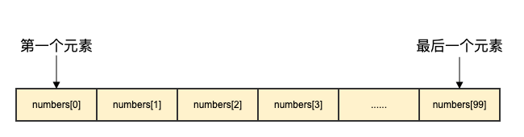
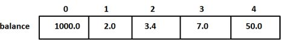

Go言語の配列
Go言語は配列型のデータ構造を提供します。
配列は、同じ一意な型を持つ、番号が付けられ長さが固定されたデータ項目のシーケンスです。この型は、整数型、文字列、カスタム型などの任意のプリミティブ型にすることができます。
個別に宣言するのに対して、number0, number1, ..., number99変数は配列形式を使用するほうが、numbers[0], numbers[1] ..., numbers[99]より便利で拡張しやすくなります。
配列要素はインデックス（位置）によって読み取る（または変更する）ことができます。インデックスは 0 から始まり、最初の要素のインデックスは 0、2 番目のインデックスは 1、というようになります。

配列の宣言
Go言語の配列宣言では、要素型と要素数を指定する必要があります。構文は次のとおりです：
var arrayName [size]dataTypeここで、arrayNameは配列の名前です。sizeは配列のサイズです。dataTypeは配列内の要素のデータ型です。
以下は、長さ 10、型 float32 の配列 balance を定義しています：
var balance [10]float32
配列の初期化
以下は配列の初期化を示しています：
以下の例では、サイズ 5 の numbers という名前の整数配列を宣言します。宣言時、配列内の各要素はそのデータ型に応じてデフォルト初期化され、整数型の場合、初期値は 0 です。
var numbers [5]int
また、初期化リストを使用して配列の要素を初期化することもできます：
var numbers = [5]int{1, 2, 3, 4, 5}
上記のコードは、サイズ 5 の整数配列を宣言し、その要素をそれぞれ 1、2、3、4、5 に初期化します。
さらに、次のように:=短い宣言構文を使用して配列を宣言および初期化することもできます：
numbers := [5]int{1, 2, 3, 4, 5}
上記のコードは、numbers という名前の整数配列を作成し、サイズを 5 に設定して、要素の値を初期化します。
注意：Go言語では、配列のサイズは型の一部です。したがって、サイズが異なる配列は互換性がありません。つまり、[5]intと[10]int異なる型ということです。
以下は、長さ 5、型 float32 の配列 balance を定義し、配列の要素を初期化しています：
var balance = [5]float32{1000.0, 2.0, 3.4, 7.0, 50.0}
リテラルを使用して、配列の宣言と同時にすばやく初期化することもできます：
balance := [5]float32{1000.0, 2.0, 3.4, 7.0, 50.0}
配列の長さが不明な場合は、...を配列の長さの代わりに使用できます。コンパイラは要素数に基づいて配列の長さを自動的に推測します：
var balance = [...]float32{1000.0, 2.0, 3.4, 7.0, 50.0}
或
balance := [...]float32{1000.0, 2.0, 3.4, 7.0, 50.0}
配列の長さを設定した場合、インデックスを指定して要素を初期化することもできます：
// 将索引为 1 和 3 的元素初始化
balance := [5]float32{1:2.0,3:7.0}
初期化配列中の{}内の要素数は、[]内の数値より大きくすることはできません。
もし[]の数値を無視して配列サイズを設定しない場合、Go言語は要素の数に基づいて配列のサイズを設定します：
balance[4] = 50.0
上記の例では、5 番目の要素を読み取っています。配列要素はインデックス（位置）によって読み取る（または変更する）ことができます。インデックスは 0 から始まり、最初の要素のインデックスは 0、2 番目のインデックスは 1、というようになります。

配列要素へのアクセス
配列要素はインデックス（位置）によって読み取ることができます。形式は、配列名の後に角括弧を付け、その中にインデックスの値を指定します。例：
var salary float32 = balance[9]
上記の例では、配列 balance の 10 番目の要素の値を読み取っています。
以下は、配列の完全な操作（宣言、代入、アクセス）を示す例です：
例 1
import "fmt"
func main() {
var n [10]int /* n は長さ 10 の配列です */
var i,j int
/* 配列 n の要素を初期化します */
for i = 0; i < 10; i++ {
n[i] = i + 100 /* 要素を i + 100 に設定します */
}
/* 各配列要素の値を出力します */
for j = 0; j < 10; j++ {
fmt.Printf("Element[%d] = %d\n", j, n[j] )
}
}
上記の例の実行結果は次のとおりです：
Element[0] = 100 Element[1] = 101 Element[2] = 102 Element[3] = 103 Element[4] = 104 Element[5] = 105 Element[6] = 106 Element[7] = 107 Element[8] = 108 Element[9] = 109
例 2
import "fmt"
func main() {
var i,j,k int
// 配列を宣言すると同時にすばやく初期化する
balance := [5]float32{1000.0, 2.0, 3.4, 7.0, 50.0}
/* 配列要素を出力します */ ...
for i = 0; i < 5; i++ {
fmt.Printf("balance[%d] = %f\n", i, balance[i] )
}
balance2 := [...]float32{1000.0, 2.0, 3.4, 7.0, 50.0}
/* 各配列要素の値を出力します */
for j = 0; j < 5; j++ {
fmt.Printf("balance2[%d] = %f\n", j, balance2[j] )
}
// インデックス 1 と 3 の要素を初期化します
balance3 := [5]float32{1:2.0,3:7.0}
for k = 0; k < 5; k++ {
fmt.Printf("balance3[%d] = %f\n", k, balance3[k] )
}
}
上記の例の実行結果は次のとおりです：
balance[0] = 1000.000000 balance[1] = 2.000000 balance[2] = 3.400000 balance[3] = 7.000000 balance[4] = 50.000000 balance2[0] = 1000.000000 balance2[1] = 2.000000 balance2[2] = 3.400000 balance2[3] = 7.000000 balance2[4] = 50.000000 balance3[0] = 0.000000 balance3[1] = 2.000000 balance3[2] = 0.000000 balance3[3] = 7.000000 balance3[4] = 0.000000
詳細
配列はGo言語にとって非常に重要です。以下では、配列のさらなる内容を紹介します：
| 内容 | 説明 |
|---|---|
| 多次元配列 | Go言語は多次元配列をサポートしています。最も単純な多次元配列は 2 次元配列です。 |
| 関数に配列を渡す | 関数に配列を引数として渡すことができます。 |